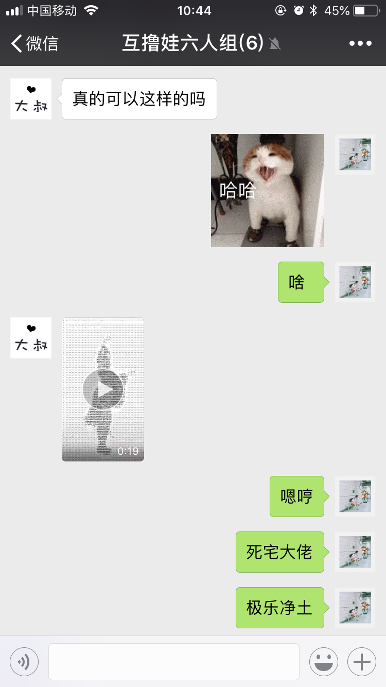

先看一下效果，原视频是这样的
我们要实现的效果是这样子的，之所以找这个视频是因为…这个视频和背景的对比度比较高做出来比较有辨识度，没有其他的意思 ( *・ω・)✄╰ひ╯
起因

某天一个基友在群里问我，在抖音看到一种视频，问我是不是能实现。我说可以的~
于是当天晚上花了一个多小时折腾了一个粗糙版本…
先把视频丢到部门技术群问有没有关键字，给了一个keyword__图片转字符串__于是照着这个思路去gayhub找资源拼乐高！
整体思路
- 第一步我们通过
input[type="file"]获取文件 - 拿到文件之后，用
URL.createObjectURL来获取视频的路径 - 通过
ctx.drawImage我们可以把某个 video 当前的图像渲染到 canvas里面 ctx.getImageData可以获取当前canvas 里面图片的色值，利用公式计算出灰度- 根据灰度的深浅去匹配要显示的字符，深色匹配比较密集的字符，最浅的直接用空格代替，然后用
ctx.fillText重绘进去 - 设置
video.currentTime来获得视频的某一时刻图像，重复上述重绘过程
既然大概的思路已经理清，接下来就是具体的编码，把想法写出来的过程
具体编码实现
获取视频文件
首先我们先确定下html需要哪些元素
- 一个 input[type=”file”] 用来给用户上传的
- 一个 video 用来承载上传的video
- 一个 canvas 用来展示最终的结果
大概是长这样：1
2
3<input type="file" id="inputFile" accept=".mp4" />
<canvas id="canvasShow"></canvas>
<video id="video"></video>
接下来js文件，我们要先对 input 绑定个监听事件，拿到文件url之后设置给video
这里要注意两点，一个是 url用完不用的话，用 URL.revokeObjectURL 释放资源； 一个是我们这里用了 await 在domVide.onCanplay之前不做任何操作，防止视频没有加载完就操作，有黑屏风险。
如果对 es6、es7、es8不熟悉的小伙伴要去补一下了~ 现在基本不会这些基本语法都看不懂demo= =
附上阮一峰老师的ES6教程，又想起面试被问ES7有什么新特性 简直是*了狗1
2
3
4
5
6
7domInput.addEventListener('change', async({target: {files }})=> {
const file = files[0];
const url = URL.createObjectURL(file);
domVideo.src = urlrl;
await new Promise(res=> domVideo.addEventListener('canplay', res));
// next ====> handleVideoInit()
});
将视频渲染到canvas
拿到视频之后，我们要把当前这一个时刻的图像渲染到canvas里面
先用ctx.drawImage(video, 0, 0, width, height) 把video dom当前屏渲染进canvas
再用ctx.getImageData(0, 0, width, height) 获取图片的色值来做处理
可以通过调整 img2Text 来选择渲染出来的图片是想要怎样的(由哪些字符组成等等)
比如把 textList改为 [‘Aa’, ‘Bv’, ‘Cc’, ‘Dd’, ‘#’, ‘&’, ‘@’, ‘$’, ‘*’, ‘?’, ‘;’, ‘^’, ‘·’, ‘·’, ‘·’, ‘·’]，辨识度会高一点
1 | /* |
到这一步，其实已经实现了把一张图片变为字符填充图了,剩下的工作无非就是把视频变成一张张的图片，然后重复执行这些逻辑
持续调用渲染字符视频
我们改一下 video2Img 函数，将其实现为能持续调用的形式， 再添加一个函数 clear 用来清理垃圾
这里用到的是 window.requestAnimationFrame 去持续调用1
2
3
4
5
6
7
8
9
10
11
12
13
14
15
16
17
18
19
20
21
22
23
24
25
26
27
28
29
30
31
32
33
34
35
36
37
38
39
40
41
42
43
44
45
46function video2Img({
timePoint= 0,
curT= Date.now(),
prevT= Date.now(),
prevInterval,
}) {
const { w, h } = size;
ctxVideo.drawImage(domVideo, 0, 0, w, h);
drawOnce();
let _interval = Math.max((curT - prevT), 16) / 1000;
if (curT - prevT !== 0) _interval -= prevInterval;
await new Promise(res=> setTimeout(res, _interval*1000));
const nextTimePoint = _interval + timePoint;
if (nextTimePoint > domVideo.duration) return clear();
tId = window.requestAnimationFrame(()=> video2Img({
timePoint: nextTimePoint,
prevT: curT,
curT: Date.now(),
prevInterval: _interval,
}));
}
function drawOnce() {
const { data } = ctxVideo.getImageData(0, 0, w, h);
ctxShow.clearRect(0, 0, w, h);
for (let _h= 0; _h< h; _h+= 8) {
for (let _w= 0; _w< w; _w+= 8) {
const index = (_w + w * _h) * 4;
const r = data[index + 0];
const g = data[index + 1];
const b = data[index + 2];
const gray = .299 * r + .587 * g + .114 * b;
ctxShow.fillText(img2Text(gray), _w, _h + 8);
}
}
}
function cleart() {
const {w, h} = size;
lastUrl && URL.revokeObjectURL(lastUrl);
tId && window.cancelAnimationFrame(tId);
ctxShow.clearRect(0, 0, w, h);
ctxVideo.clearRect(0, 0, w, h);
}
源码与demo
至此，功能基本都实现了，下面提供在线的呆毛和github仓库地址~
在线呆毛
github 源码
video转图片忘了是在github看哪个项目的，ctx.drawImage(video, 0, 0, width, height)这个是看完才知道的。
图片转字符基本是看这个大哥的github
在找方案的时候看到的一个像素图实现，挺有趣的，以前实现马赛克是拿周围像素值取平均去做，这个哥们是直接放大截图 更简单粗暴传送门